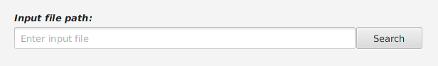
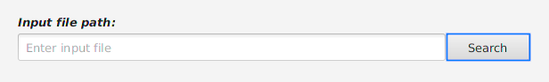
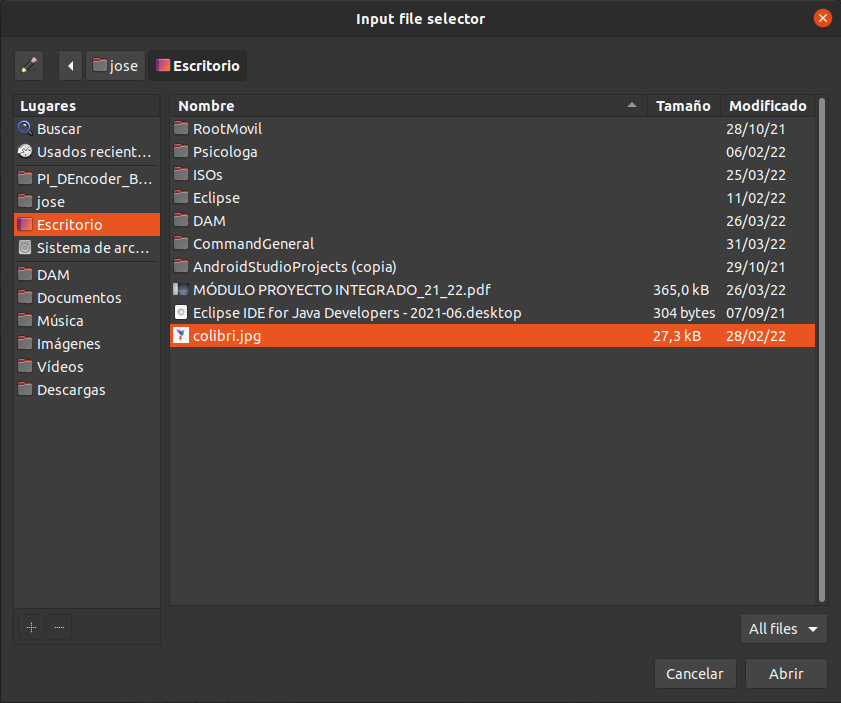
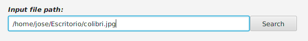
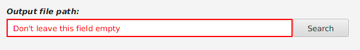
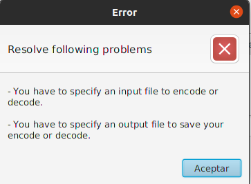
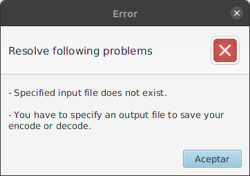

Input File Component
Este componente, es un componente personalizado creado para aportar usabilidad para el usuario, y que le sea fácil introducir el fichero a cifrar o descifrar.
El campo se compone de un campo de texto, y un botón, como se puede ver en la siguiente imagen:

Se puede introducir el fichero a cifrar o descifrar de dos formas.
Escribiendo directamente la ruta al fichero, podemos obtenerla de las siguientes formas, dependiendo de si usamos sistema operativo Windows, o Linux (distribuciones Debian):
→ SO Windows.
Otra forma de introducir el fichero es haciendo click en el botón, con lo que se desplegara un selector de ficheros con el que podremos navegar por la interfaz gráfica hasta localizar y seleccionar el fichero.

Linux:


Windows:
Casos de ERROR:
Si hace click en el campo de texto, o borramos el contenido que haya, y después se hace click en otro componente (se le quita el foco al campo de texto), el borde del campo de texto cambiará a color rojo, y se podrá leer que no podemos dejar este campo vacío.

En caso de dejarlo vacío, al hacer click en codificar/decodificar se podrá ver el siguiente mensaje de error:

Siempre que se quede vacío el campo con el fichero de entrada, se oculta y vacía el fichero de salida, por lo que el error siempre irá acompañado del error por dejar el campo con el fichero de entrada vacío como se puede ver en la imagen anterior.
En caso de introducir un fichero no existente, al hacer click en codificar/decodificar, se desplegara el siguiente mensaje de error:
